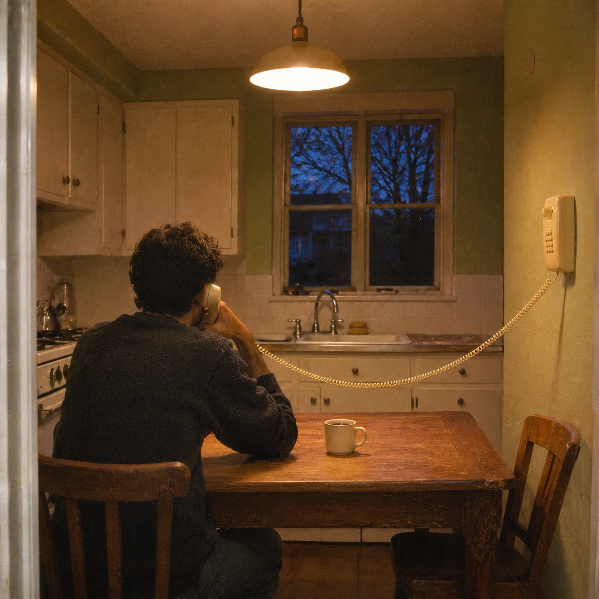
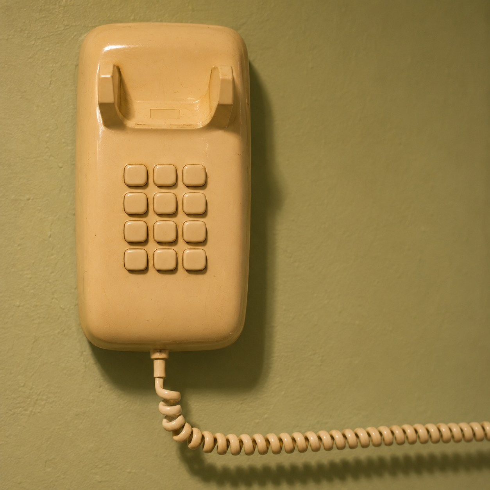

You Are First


There is a telephone number you can call. A recorded voice thanks you for waiting and tells you that you are first in the queue. Then music, soft and looping, and every few minutes the voice again: you are still first. No one is ahead of you. No one ever answers.
First is the best place in any line. It means you are next. But it is also the only place where waiting has no reason left. At tenth, you can see what you are waiting for: nine other people. At first, you are waiting for someone to arrive, and nothing in the music can tell you whether they exist.
That is what hold music is for. Silence on a line sounds like being dropped, so the music plays to say the line is still open. It is not made to be listened to, only to be there.
Mladen Stilinović made a set of photographs of himself lying in bed and called them Artist at Work. Holding is work of that kind. You do nothing, and you cannot do anything else. Your whole attention stays ready for a voice.
The call ends only when you hang up. Then you will have decided, on your own, that no one was coming. Or that someone was, and you left first.